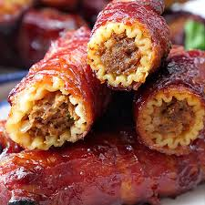

Smoked Shotgun Shells

Smoked Shotgun Shells make a fantastic appetizer or tailgating treat!
We have made these with many different fillings and this Summer settled on this recipe that my family and guests loved.
It's a very hearty version and it is filled mostly with meat and a little cheese and hatch chilies for a Southwestern flavor profile which we think you will love.
However, as I always say, feel free to make the recipe you own with fillings that your family will enjoy.
Ingredients:
- 2 boxes of manicotti shells
- 2 packs of bacon
- 1 lb sausage (I prefer sweet italian sausage, but spicy is good too)
- 1 lb of 90/10 ground beef
- 8 oz, farm cut shredded cheese
- Your Preferred rub(I use MC Texas Sugar)
- 4 roasted hatch chilies
- 1 cup of sweet BBQ sauce(I use Stubb's Sticky Sweet)
Steps:
- Mix the the Italian sausage, ground beef & shredded cheese in a large mixing bowl.
If you are adding the hatch chilies or other peppers, mix those in as well.
- Stuff the manicotti tubes completely with the mixture.
This filling will make approximately 24 shells, with 4 shells left over.
- Wrap each shell in one piece of bacon covering the shell as much as possible.
- Season all sides of the shells with your chosen rub.
- Place the shells on a sheet pan and rest in the refrigerator at least 4 hours or up to overnight. Anything less will result in a tough and chewy bite after these are cooked.
- Prepare your smoker at a temperature of 300 degrees.
- Place the shotgun shells on a baking rack and place then into the smoker.
- Smoke for 1 hour. At this point the ground meat will be above 165 internal temp and the shell will be tender.
- After 1 hour, brush on the BBQ sauce.
- Return to the smoker and allow the sauce to tack up for 10 - 15 minutes.
- Remove from the smoker, slice and enjoy!
Home